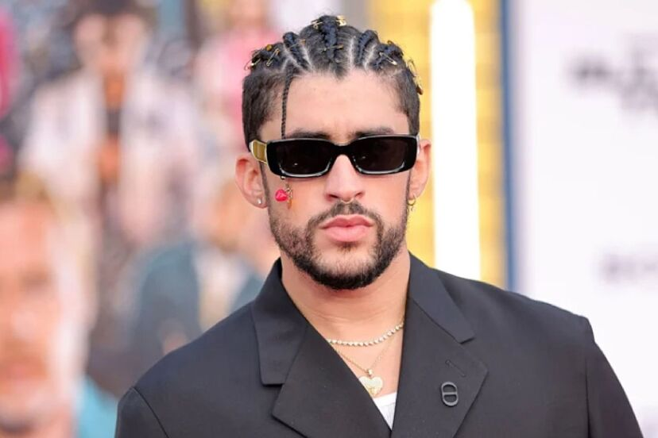

Benito nació el 10 de marzo de 1994 en Almirante Sur, Puerto Rico. Su padre,Benito "Tito" Martínez, era un conductor de camiones, y su madre, Lysaurie Ocasio, una retirada maestra de inglés. Su madre solía escuchar canciones de salsa, merengue y baladas, como de Juan Gabriel Abrázame muy fuerte, mientras que Bad Bunny ayudaba con los coros. Martínez creció en las playas de Puerto Rico, en la comunidad de Vega Baja, con sus padres y dos hermanos menores, Benie y Bysael, a quien considera ser de sus mejores amigos. Él declaró ser criado en un hogar feliz, diciendo que "no era de los chicos que solían andar en la calle, me gustaba estar en casa con mi familia".